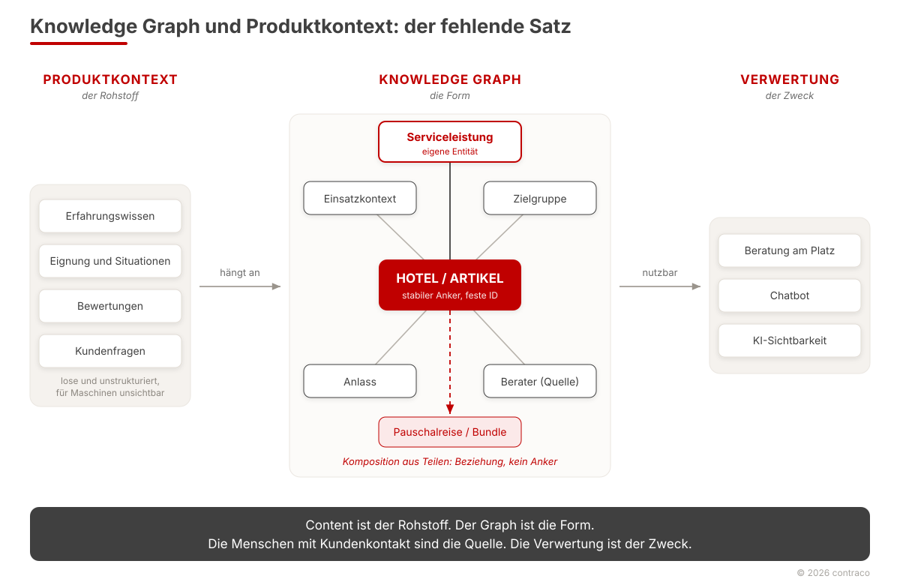

Der fehlende Satz
Warum „Knowledge Graph" und Produktkontext in fast jedem Unternehmen aneinander vorbeireden
In großen Handels- und Reiseunternehmen hört man derzeit zwei Begriffe, oft aus demselben Mund. „Knowledge Graph" auf der einen Seite. Produktkontext, Erfahrungswissen, im Reisevertrieb „non-bookable content" auf der anderen. Beide werden nebeneinander benutzt, selten miteinander verbunden. Wer im Raum sitzt und ehrlich ist, sagt irgendwann den Satz, den alle denken: „Ich verstehe den Zusammenhang nicht ganz."
Das ist keine Wissenslücke einer Person. Es ist ein fehlender Satz, und er fehlt fast überall.

Zwei Begriffe, zwei Herkünfte, zwei Eigentümer
Die beiden Wörter reden deshalb aneinander vorbei, weil sie aus verschiedenen Welten kommen.
Produktkontext ist eine Inhaltskategorie. Er umfasst alles, was das Transaktionssystem nicht verkaufen kann: wofür ein Produkt taugt, für wen, in welcher Situation, was Kundinnen und Kunden wirklich fragen, wo die Grenzen liegen. Im Handel steckt dieses Wissen in Filialen, im Service, in Retouren und in Köpfen. Im Reisevertrieb steckt es in den Beraterinnen und Beratern in der Fläche. Der Begriff kommt aus der Marketing- und eCom-Welt und ist vom Verkauf her gedacht.
Ein Knowledge Graph ist keine Inhaltskategorie, sondern eine Form. Entitäten und Beziehungen, maschinenlesbar, abfragbar, zitierfähig. Der Begriff kommt aus der Technik und ist von der Maschine her gedacht.
Verschiedene Herkünfte, verschiedene Abteilungen, verschiedene Eigentümer. Niemand hat den Satz formuliert, der sie verbindet, und deshalb stehen sie nebeneinander.
Das eine bedingt das andere, aber nur in eine Richtung
Der Zusammenhang ist einfach, sobald man ihn ausspricht. Content ohne Struktur ist für ein Sprachmodell tot, ein Haufen Texte, Bilder und Notizen, den keine Maschine verwerten kann. Ein Graph ohne Content ist eine leere Struktur, oder er enthält nur die transaktionalen Daten, die im Buchungs- oder Warenwirtschaftssystem ohnehin schon liegen.
Der Graph ist ohne den Content wertlos. Der Content ist ohne die Struktur unverwertbar.
Zwingend auseinander folgt trotzdem keines der beiden. Man kann sehr wohl das eine ohne das andere haben, und genau das ist in den meisten Häusern der Zustand. Deshalb ist die Parallelität der Begriffe kein Sprachproblem. Sie ist das Symptom dafür, dass mehrere Organisationen KI parallel denken, ohne gemeinsamen Rahmen.
Der Rohstoff, den ein reiner Online-Anbieter nicht kaufen kann
Hier liegt der Teil, der über Sichtbarkeit im KI-Kanal entscheidet. Ein Knowledge Graph braucht genau das, was ein reiner Online-Wettbewerber nicht besitzt: Erfahrungswissen zu Produkten, Situationen, Zielgruppen. Welches Hotel mit Kleinkindern gut funktioniert. Welches Gerät nach zwei Jahren Nutzung schwächelt. Wofür ein Produkt sich eignet und wofür nicht.
Dieses Wissen ist die größte ungenutzte Quelle im Unternehmen, und sie sitzt nicht in der IT. Sie sitzt in der Fläche, in den Filialen und Beratungsplätzen, in den Menschen mit Kundenkontakt. Wer diesen Rohstoff strukturiert erschließt, sitzt nicht auf der Bittstellerseite („wir hätten auch gern KI"), sondern auf der Rohstoffseite. Und wer eine Struktur zuerst beschreibt, prägt sie.
Warum das zusammengesetzte Produkt kein Anker ist
An dieser Stelle wird das Modell zur strategischen Frage statt zur IT-Frage. Ein Graph braucht stabile Ankerentitäten mit dauerhaften Kennungen. Das Hotel mit seiner branchenweiten ID. Der Artikel mit seiner GTIN. An diesen Ankern hängt das Erfahrungswissen.
Das verkaufte Produkt ist oft gar kein Anker. Eine Pauschalreise ist eine Komposition aus Veranstalter, Hotel, Flug, Transfer, Termin und Verpflegung, zusammengesetzt pro Saison und pro Abflugtag. Ein konfiguriertes oder gebündeltes Handelsprodukt ist dasselbe Muster. Solche Kompositionen entstehen und verfallen. Erfahrungswissen kann daran nicht andocken. „Abends am Pool ist es laut" gehört an das Hotel, nicht an eine Reisecode-Kombination, die es in sechs Monaten nicht mehr gibt.
Die Konsequenz ist unbequem. Denkt man den Graph nah am Transaktionssystem, die naheliegende Richtung für Online-getriebene Köpfe, dann hat das Wissen aus der Fläche keinen Ort, an dem es hängen könnte. Der Rohstoff wird geliefert und kommt nirgends an. Und die eigentliche Leistung, die ein Vollsortimenter oder Veranstalter gegenüber einem Marktplatz erbringt, Betreuung, Absicherung, Service, wird im KI-Kanal unsichtbar, weil niemand eine Entität dafür vorgesehen hat.
Der Teil, den beide Begriffe vergessen
Content plus Graph ergibt noch keinen Nutzen. Es fehlt der Verbraucher: die Beratung am Platz, der Chatbot, die Sichtbarkeit in den KI-Antwortmaschinen. Solange dieser Verwertungsweg nicht benannt ist, bleibt alles ein Infrastrukturprojekt ohne Ergebnisbezug. Und ein Projekt ohne Ergebnisbezug überlebt in keinem Vorstand.
Der Satz, der fehlt
Er ist kurz. Der Content ist der Rohstoff. Der Graph ist die Form. Die Menschen mit Kundenkontakt sind die Quelle. Und die Verwertung, Beratung, Chatbot, KI-Sichtbarkeit, ist der Zweck, der aus Infrastruktur ein Ergebnis macht.
Wer diesen Satz ausspricht, ordnet ein Feld, das sich in fast jedem großen Unternehmen gerade selbst im Weg steht. Nicht mit mehr Technik und nicht mit mehr generierten Texten, sondern mit geprüftem Kontext, der auf stabilen Ankern hängt und einen klaren Verbraucher hat. Der Unterschied im agentischen Handel ist nicht, wer die meisten Daten erzeugt. Es ist, wer den Kontext besitzt, dem eine Maschine vertrauen kann.
Kontext, dem Maschinen vertrauen
contraco begleitet Handels- und Reiseunternehmen beim Aufbau von Knowledge-Graph-Strukturen, die Erfahrungswissen aus der Fläche verwertbar machen.
Gespräch beginnen →